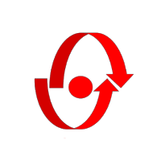
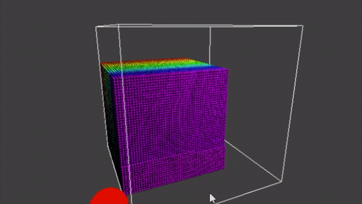

Software engineer with experience in a broad range of fields, from bio-robotics to design verification. Educated at Carnegie Mellon University, passionate about technology, enthusiastic about collaboration, all with a penchant for creative expression.
Currently seeking a full time position in software engineering.


A from-scratch software rasterizer rendering real-time ASCII terminal graphics from .obj mesh files, with Z-buffering, MSAA anti-aliasing, and Lambertian shading for accurate depth handling and surface lighting.
GitHub
A Smoothed Particle Hydrodynamics fluid solver implemented in three variants — sequential, OpenMP, and CUDA — with real-time rendering through an OpenGL Vertex Buffer Object pipeline. Designed a Z-order (Morton code) spatial grid bounding each particle's neighbor search to 27 local blocks instead of a naive O(N²) scan, and diagnosed a CUDA kernel serialization bug to achieve up to a 279,654x speedup and real-time simulation of 100,000+ particles.
Project Site GitHub